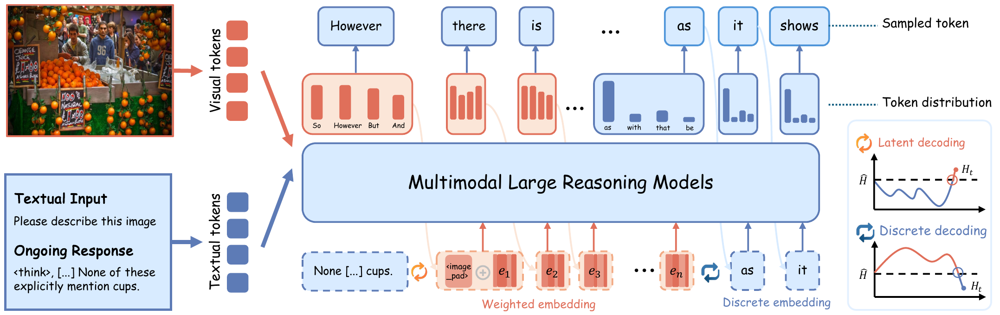
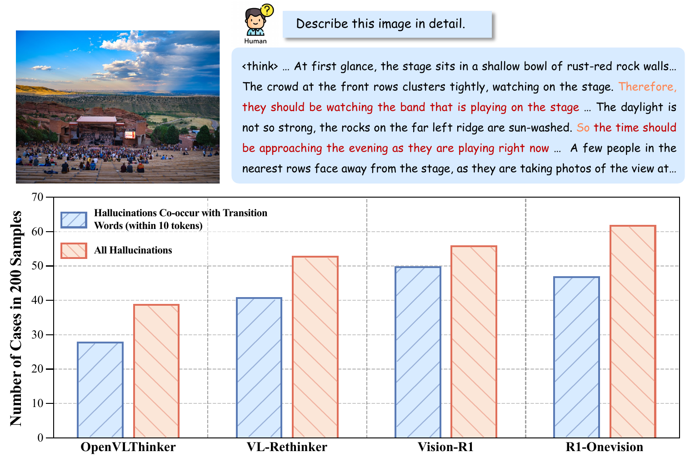
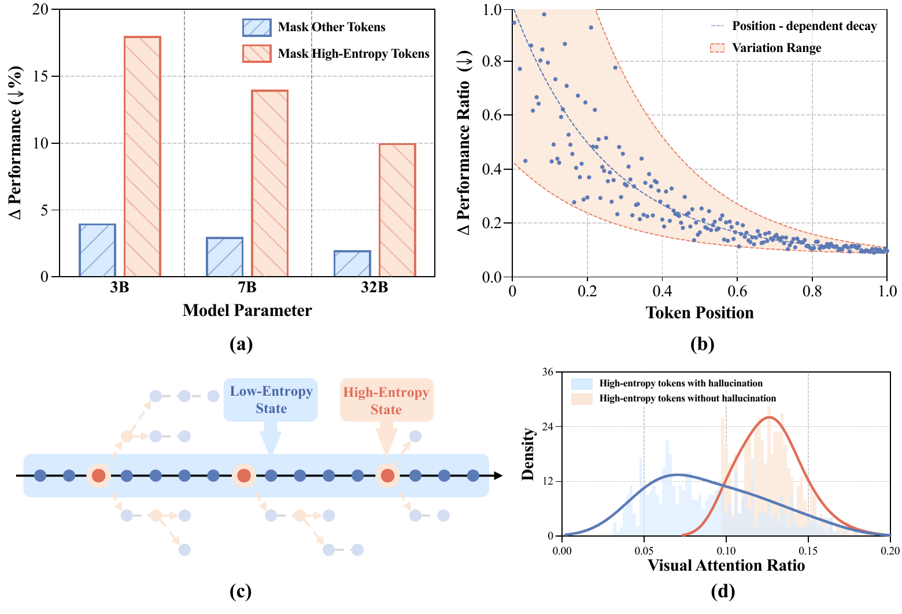
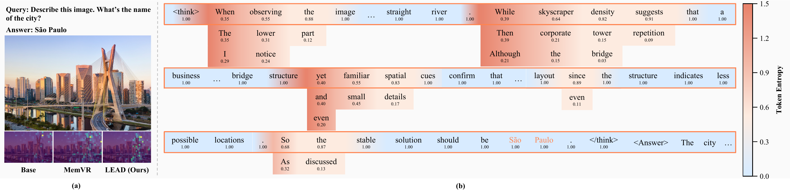
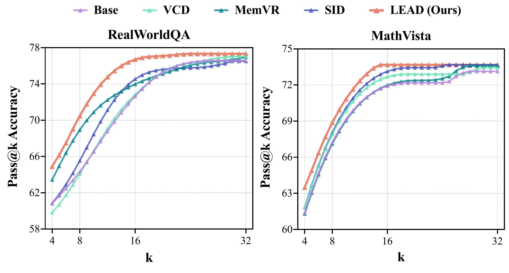
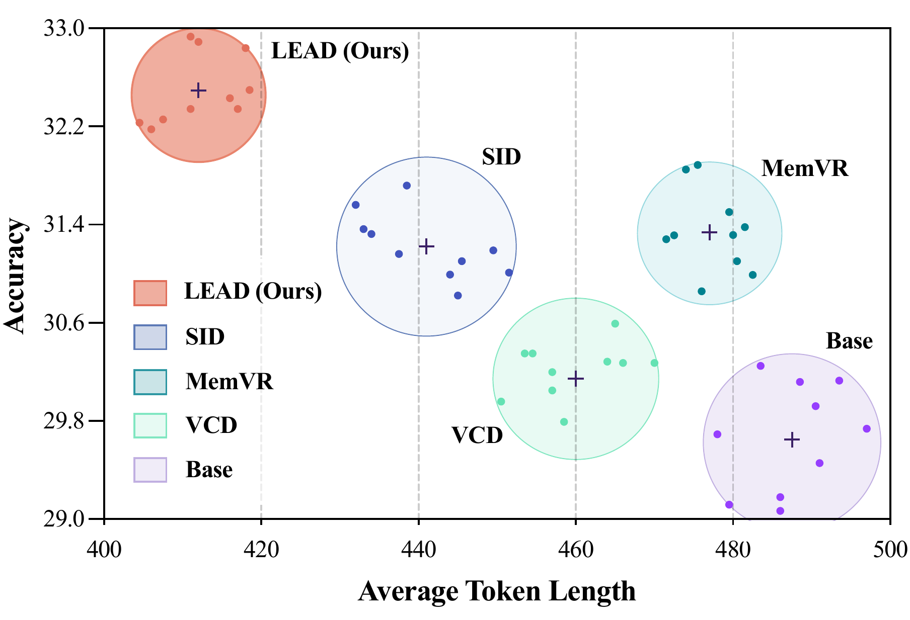
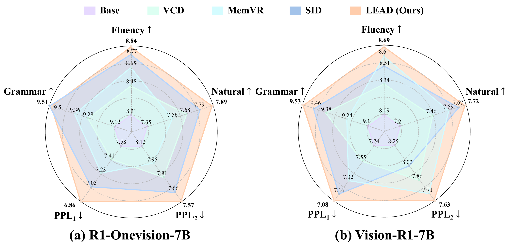
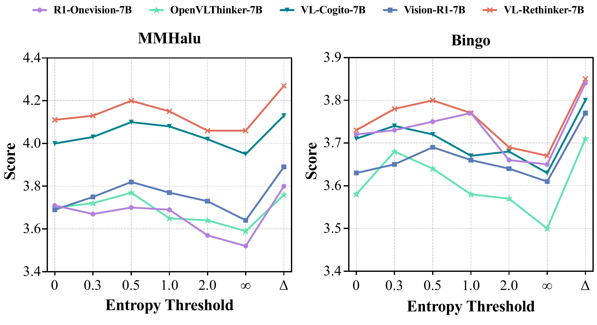
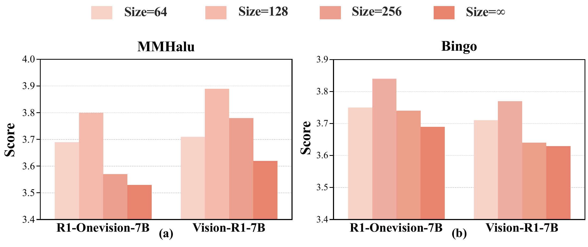

Method Overview
LEAD treats token-level entropy as a signal of reasoning uncertainty. When the model is in a high-entropy state, a single sampled token is often insufficient to represent the true competition among candidate semantics, so LEAD directly builds probability-weighted embeddings from the full token distribution to preserve multiple semantic possibilities. Once entropy falls, the method switches back to standard discrete decoding. At the same time, LEAD injects visual anchors at critical uncertain stages to strengthen grounding and suppress hallucination propagation.

Key Findings and Motivation
We begin by analyzing the reasoning process itself and studying where hallucinations emerge relative to uncertainty. A direct observation is that, in multimodal reasoning models, hallucinations frequently co-occur with transition words such as because, however, so, and but. Further token-level analysis shows that high-entropy tokens are not negligible noise; instead, they are pivotal branching points that shape the subsequent reasoning trajectory. When these high-entropy tokens are associated with hallucinations, the model also tends to allocate less attention to visual content.


Qualitative Visualization
LEAD not only improves final answers, but also changes the model's reasoning behavior. Qualitatively, the method maintains richer token distributions during high-entropy stages and reallocates visual attention at critical moments, preventing the model from drifting away from image evidence and continuing solely along linguistic momentum.

Main Results
Experimental results show that LEAD does not merely improve the final score on a single benchmark; instead, it achieves a better overall balance among sample efficiency, reasoning efficiency, and text quality. It reaches higher Pass@k accuracy with smaller k, attains better correctness with shorter average reasoning length, and maintains or improves fluency, naturalness, grammar, and perplexity.



Ablation Study
Ablation results further validate the core design choices of LEAD. A dynamic entropy threshold outperforms fixed-threshold strategies, suggesting that reasoning mode should switch adaptively according to uncertainty. In addition, the discrete reasoning window is not simply better when larger; a moderate window provides a better balance between semantic exploration and stable convergence.

